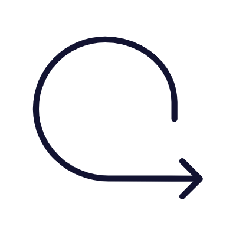

Site purpose:
Raise your company's name, increase your customers, and get to know your product better. Also, directing to the online store.
Main target:
Men and women in their 20s and 30s who want to purchase furniture, or those who are thinking of moving.
And those who have their own particularity and want to customize the furniture according to the shape of the house.
It can be viewed on smartphones and PCs.
Impressions of the site:
By using achromatic color and give the visitor impression of proffesionalism and reassuring.
Add many photoes to make it easier to get a picture of the furniture.
Summary：
This is the work I made n the final assignment of Tech Academy. It is only the top page however, i made this by working so hard. Hope you like it.
Pro：
Regarging to the impression of the site, I could make as I planned.
Cons：
The pictures are different between smartphone and PC as the photo size wasn't match and too streched on the PC.
Ins Design 